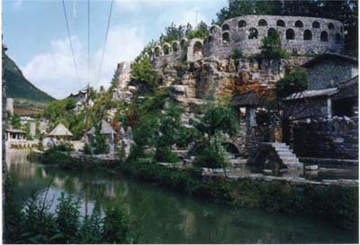
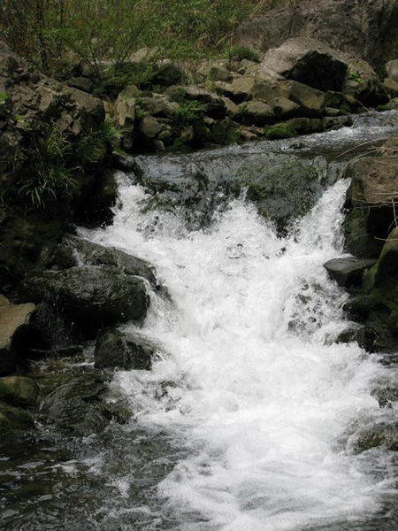
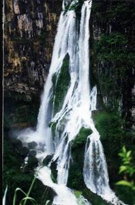

你好，欢迎光临夜狼谷！
旅游风景 发布时间：2017-12-10 23:25:28
夜郎谷的石柱、石板画、石茅屋、石古堡、石桥、石路、石长城等等，都能淋漓尽致地展示出古夜郎国时期的文化艺术。小桥、流水、人家、弧形状的石帘门融入了贵州夜郎古国苗、布依、水、侗、仡佬等民族，以石为居、取石创艺、依山筑屋、依林为生、傍水为乐的勤劳生活方式。透过石筑长城的垛口，却发现在另一个山头上，屹立着古旧的城堡，据说那里曾是夜郎人的古战场，金戈铁马，狼烟遍地的日子仿佛就在身旁……

夜郎谷的城堡、长城、小桥、房屋、通往各地的路阶都由石头堆砌而成，不过也各有特色。孔明（诸葛亮）的乱石阵、石碾、水车等一件件古国作品，都是宋培伦自己设计并参与建筑的。在花溪山清水秀的自然生态中，创建一个与古夜郎国传说有关的浓缩生态园，既是为景区增添了美丽，也是从事艺术作品的创新及打造夜郎园的旅游品牌，这就是宋培伦梦中的夜郎，它依旧透出那种原始贫穷艺术文化的魅力。夏秋到此，在2．5公里长的思丫河水中游泳、嬉戏、漂流、观品夜郎古国艺术文化，一切是那么的自然、舒畅。
夜郎谷的山有别于泰山、峨眉山之类高出“地表”的山。因为受地壳运动的影响，这里山的形成敷衍在山谷两壁的石崖上了，从谷底抑视两岸，只见它们挨挨挤挤地往山谷探身，仿佛要扑身下来，所以就不好用挺拔、高耸之类的词语去形容。也有人用张家界之“奇”、“峻”去描写夜郎谷的山，因为它们不拘一格，也不守规矩，别处的山从南到北连绵起伏，有头有尾，群峰涌动。而这里的山有如从地底下冒出的一堆石头，这里挺直一下腰板，形成了一面大绝壁；那里蹲下身去，做成了蟾蜍望月的姿式；要么两岸一齐向对方迈步，像是久别重逢。总而言之，夜郎谷的山不是一般的石头、泥巴，而是人的石头、泥土；它有感情，好动，而且调皮，如自由放旷地放松了的身子骨，由此而成就了“三十里画廊”。
跟峡谷中的山互为应和的是夜郎谷中的崖。这些山崖是山的骨骼和表情，山有什么想法、感情、理想，全被这些奇形怪状的崖给注释了。来到夜郎谷之前，笔者以为是人常常主宰自然，用了甲骨文、金文、隶文、篆文乃至方格子楷体“赐”予自然山川许多“名字”。到了夜郎谷，这种观念自觉地颠倒过来。山崖做出的许多动作告诉我们这该叫“万佛听经”，那该叫“夜郎王印”，那该叫“秦猿吼日”，还有“夜郎王峰”、“母子相抱”、“一脚登天”等等，在夜郎谷里边走边看边数，眼睛看不快，数目要数错，脖子要转酸。别处的山崖可能要么一律是黑的，是灰的、是红的，而这里的山崖颜色杂陈，比如“夜郎王印”一块四四方方略有残破的石壁洁白如玉，稍有凹进。“万佛听经”呢，众多沙弥的面前摆着一本巨书，翻开一半的书本远望去，在页码之间或白或竭，仿佛这本佛经被释加老佛祖翻看过一样，有些地方还作了注释。有些地方，缠络的老藤延伸或者倒挂下来，或有水瀑倾泻，山崖平增了几分灵气。
水是灵动的处子，是山的血液，是崖的毛细血管。满峡谷就算有绝好的山与崖，如没有一条水蜿转其中，这山崖就枯了，硬硬地，失去了生机。夜郎谷偏偏有这么一条好水。新晃县地处云贵高原余脉，一年有半多日子云蒸霞尉，而夜郎谷地势又高许多，所以一年四季云雾缭绕，就不足为奇了，何况谷底有若大的一条河水。夜郎谷的水大部分来自地底，这和喀斯特地貌有关。几年前，当地人在源头用大石块草草拦了一道堤坝，用于乘橡皮划子漂流，每天居然有上百人趁兴一漂30里，其浪漫、潇洒不亚于当年李白乘舟出三峡“两岸猿声啼不住，轻舟已过万重山。”由地底和岸间渗涌出来的水浸人的凉，在峡谷的开端堆积成湖，远视如乳玉，近看是碧水，然后沿着峡谷向东而去，窄处滔滔喧响，宽处鳞鳞展波，这样，夜郎谷的水就如山如崖一样有名了。

夜郎谷少有人来，水边长满了一人多高的芭毛草，灯笼树以及诸多不知名的灌木，有些锄把粗的老藤居然在水上打个转身再回到岩上，人踩上去，居然稳稳当当，在这个开放的市场经济时代，就有与世隔绝的味道了。一些植物的根须成簇地飘佛在水中，随着水波一漾一漾地，煞是好看。至于从山顶或山间飞下来的水，那就是瀑布了。“古栈道”上有一股大水，常年不断，它三次于岸间停留，瀑布分分合合，不但有“一唱三叹”之妙，而且蕴含着“分久必合，合久必分”的道理，真是妙景。有些水瀑兀地从圆月大的石窟中飞泻下来，有如长练，待落到树木丛生的山间，那应该有的訇然响声，居然消失了，等你再倾身细听，飞瀑击荡的水声又隐隐传来，这正好印证了一句佛理：“有道无时无亦有，无道有时有是无”，妙哉！

Copyright © 2017－2020 All Rights Reserved 版权所有
地址：位于贵州贵安新区党武乡花溪大学城的夜郎谷喀斯特生态园是一个独领风骚的神秘之谷